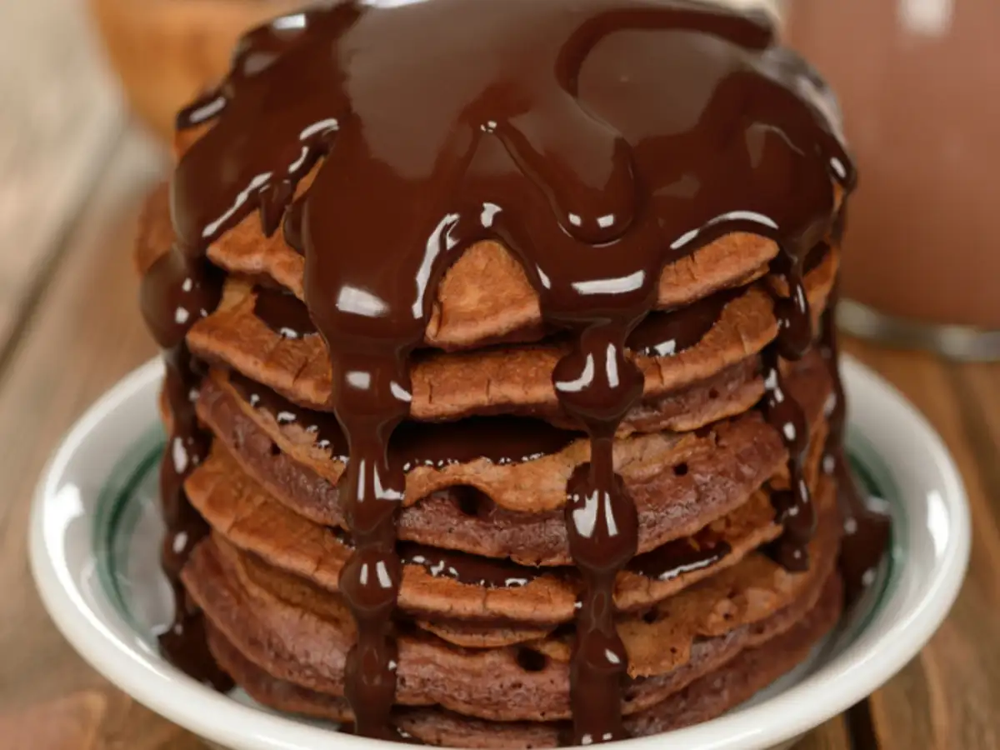

Home
Pancake

Description
Pancakes are a beloved breakfast staple enjoyed around the
world for their fluffy texture and endless topping possibilities.
from a simple batter of flour, milk, eggs, and leavening agents like
baking powder, pancakes cook quickly on a hot griddle or pan, forming
golden-brown rounds that are soft on the inside and slightly crisp on the
edges
Ingredients
- 1 cup all-purpose flour
- 2 tablespoons sugar
- 1 teaspoon baking powder
- ½ teaspoon baking soda
- Pinch of salt
- 1 cup milk
- 1 egg
- 2 tablespoons melted butter (or oil)
- 1 teaspoon vanilla extract (optional)
- Butter or oil for greasing the pan
- Syrup, fruits, or other toppings (optional)
Steps
-
Mix dry ingredients – In a bowl, combine 1 cup all-purpose flour, 2 tbsp
sugar, 1 tsp baking powder, ½ tsp baking soda, and a pinch of salt.
-
Mix wet ingredients – In another bowl, whisk together 1 cup milk, 1 egg,
2 tbsp melted butter (or oil), and 1 tsp vanilla extract.
-
Combine – Pour the wet ingredients into the dry and gently mix until
just combined. Small lumps are okay; don’t overmix.
-
Preheat and grease pan – Heat a non-stick pan or griddle over medium
heat. Lightly grease with butter or oil.
-
Cook pancakes – Pour ¼ cup batter onto the pan for each pancake. Cook
until bubbles form on top, then flip and cook the other side until
golden.
- Repeat – Cook remaining batter, greasing the pan as needed.
-
Serve – Stack and serve warm with syrup, fruit, butter, or toppings of
your choice.